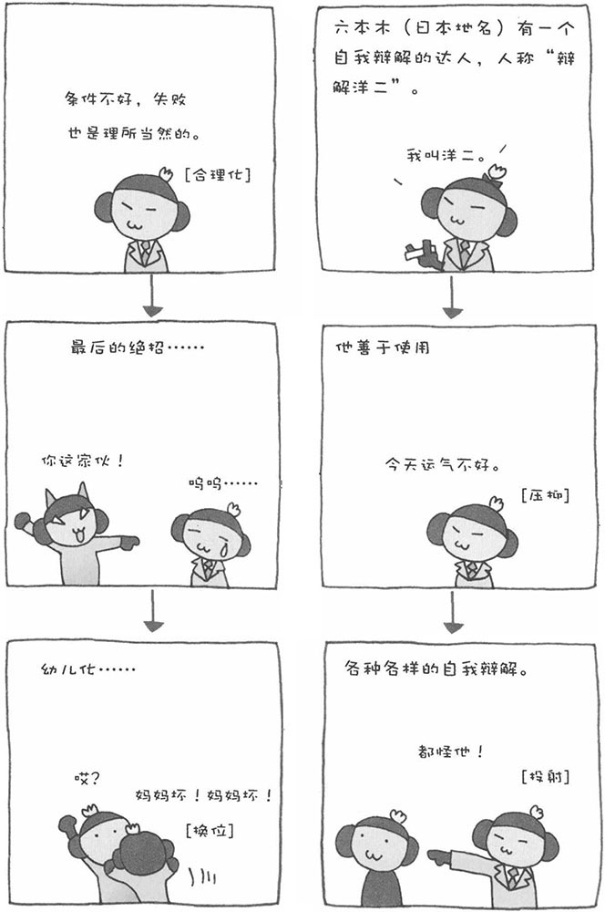
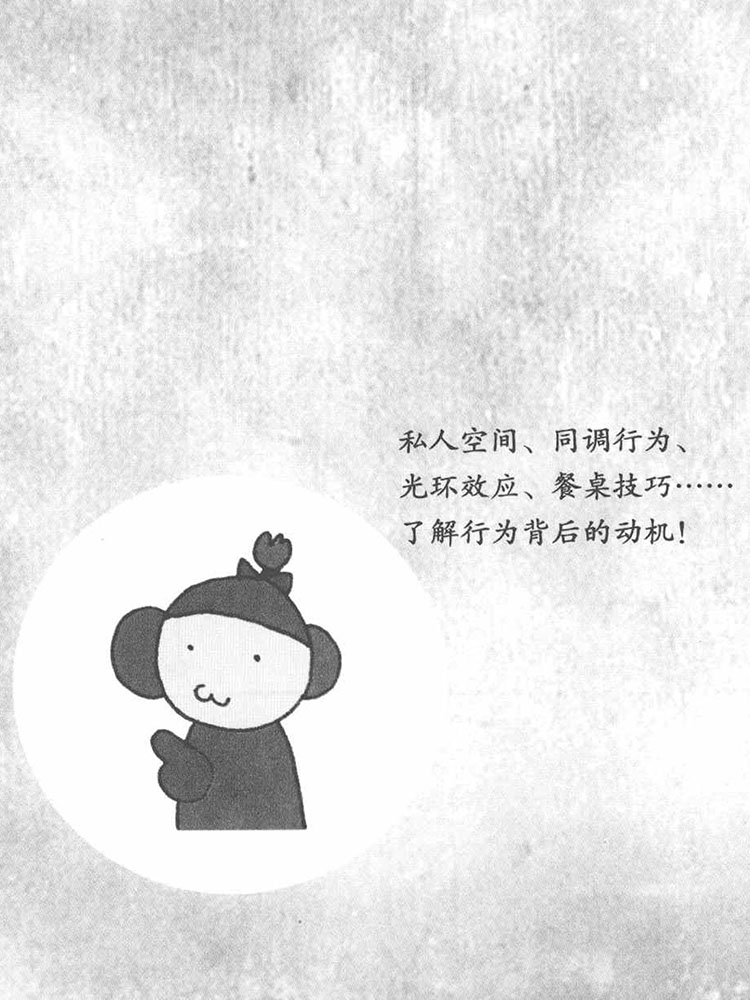

人是一种非常善于自我保护的动物，把自我辩解应用得得心应手。比如，有想要的东西却得不到时或者做事情失败时，人会找一些理由来为自己辩解、保护自己。这叫做"防卫机制"，为的是防止自己出现不安或不快。
接下来，为大家介绍几种具有代表性的"防卫机制"，这些"防卫机制"可以算得上是自我辩解的豪华阵容。
·压抑：当人犯错时，会找一些借口为自己的错误或失败辩解，比如"运气不好"、"天气太差"、"没有帮手"等。这是人在无意识地隐瞒失败的真实原因，拒绝承认自己的失败。
·反向行为：对于自己喜欢的人态度冷淡，而对于自己讨厌的人却非常热情，即采取与意识相反的行为。当遇到使用压抑法已经无法处理的强烈感情时，人会采取反向行为来进行自我防卫。
·投射：将责任转嫁给他人，把自己的错误、失败正当化。比如，"我之所以犯这样的错误，都是因为上司非要把这项工作交给我做"、"因为前面有块石头挡路，我才被绊倒的"等等。
·合理化：失败的时候，会给自己找一个最为适当的理由，让自己释然。"这道题那么难，我做不出来是正常的"、"因为我生病了，所以才做不好"等。精英意识强的人，多采用这种方法保护自己。
·换位：将压抑的感情向其他对象发泄的行为。比如，老师批评了自己，因此对老师心怀不满，但不会向老师本人发泄不满，而是把不满发泄到对自己没那么强硬的人身上，比如妈妈等。
·升华：通过社会允许的行为来发泄压抑的感情。比如通过体育运动来发泄感情等。

